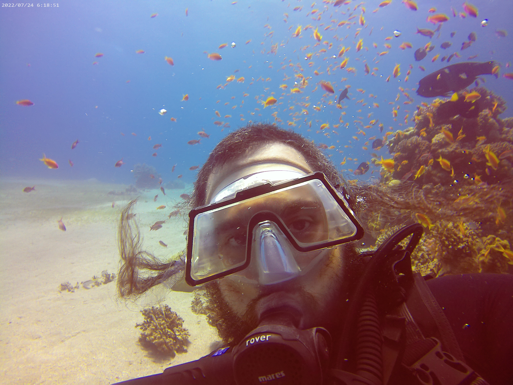
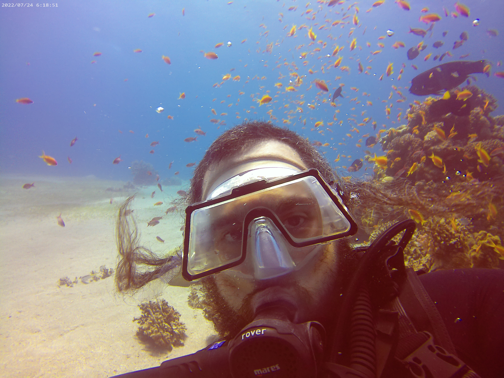
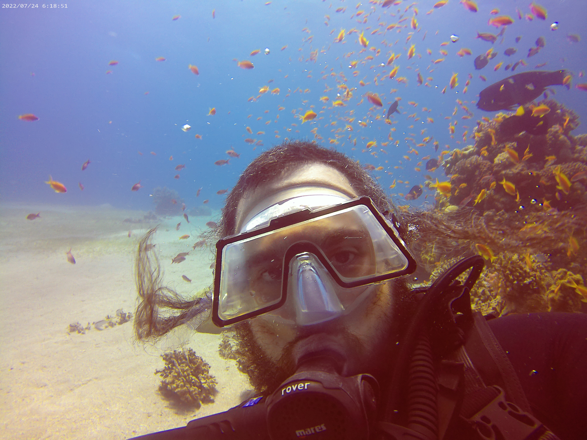

This dive took place at one of my favorite places to dive in Eilat, a place called in English, EAPC Open Beach. It was closed for a very long time but was just reopened for diving with all of the beutifal coral found there.
While I have an opportunity to trvel around, I manage to sometimes get away and go diving. During these trips, I get in fresh air and canastered air and usually get in some nice pics as well.
Eilat, July 24 2022. A single dive in an area called EAPC Open Beach.
Two dives on this day. Both of them had me diving with new partners, and I hope to dive with those people again.
The first dive was to EAPC Open Beach. This is a newly opened dive-site just south of the dolphin reef.
The dive went to 27 meters. Everything went smoothly and I although I didn't get to see any dolphins who are known to visit the area,
I did run into a co-worker as I was getting out of the water.

This dive took place at one of my favorite places to dive in Eilat, a place called in English, EAPC Open Beach. It was closed for a very long time but was just reopened for diving with all of the beutifal coral found there.
Eilat, July 10 2022. A single dive in an area called EAPC Open Beach.
I had a great dive with my diving partner Matis but both of us had some scary mechanical issues. My BCD started to inflate very quickly while I was 25 meters below the surface. I didn't want to risk shooting to the surface like a bottle full of air so my guide had to disconnect my low-pressure hose from the BCD and from there out I was using my lungs to manage boyancey. My partner Matis had his goggles slide up his nose consistantly letting water flood into his mask. In the process of his attempting to clear his mask, he went through a lot of his air. Apart from this, it was an amazing dive.